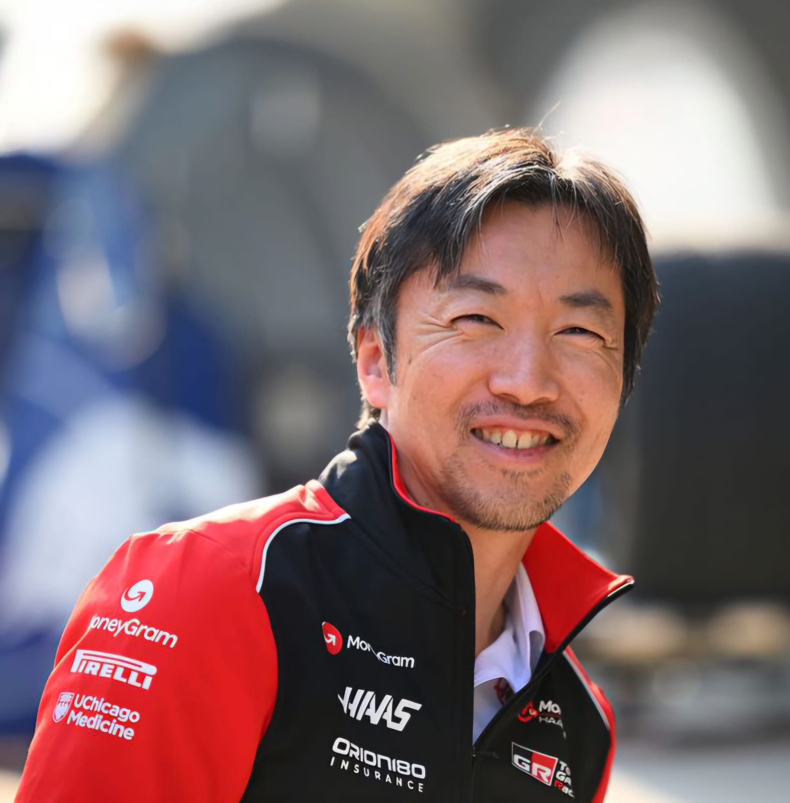

Ayao Komatsu
Ayao Komatsu
Team: Haas
Nationality: Japan
Born: 1976
In charge since: 2024
History: engineer Ayao Komatsu became Team Principal of Haas in early 2024 following Guenther Steiner’s departure. He began his Formula 1 career with BAR in 2003 and later worked for Renault as a performance and race engineer. Komatsu joined Haas at their 2016 debut and eventually served as Trackside Engineering Director. His focus on efficiency and discipline has revived the team, helping Haas finish 7th in the 2024 Constructors’ standings and maintain stability entering 2026.
